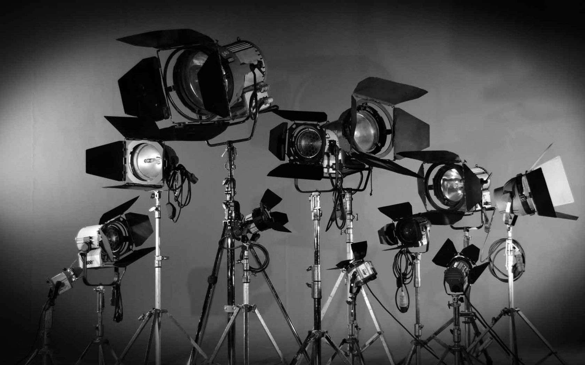
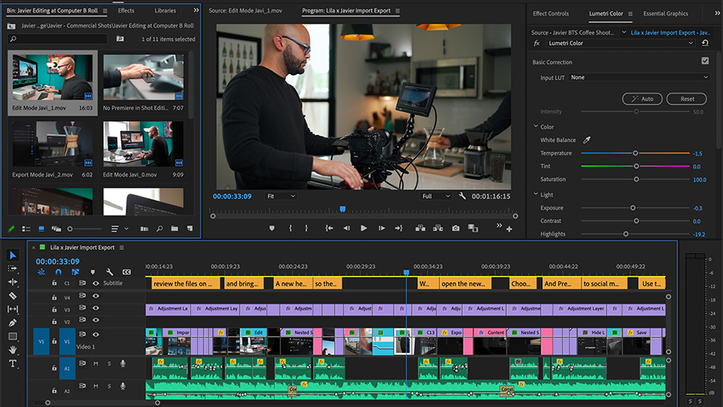
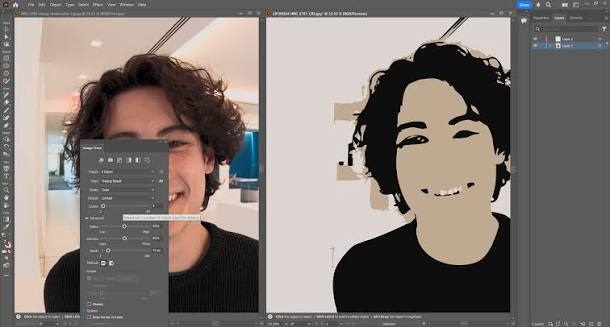
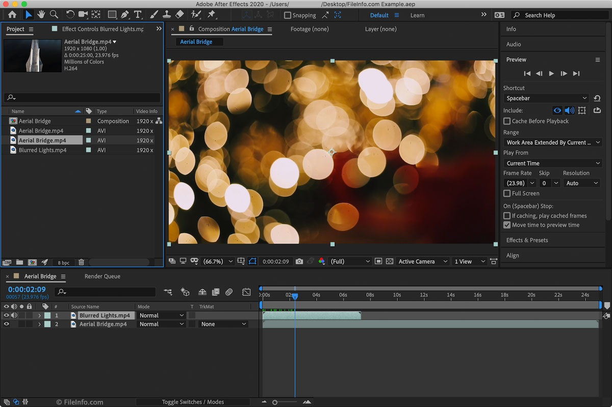
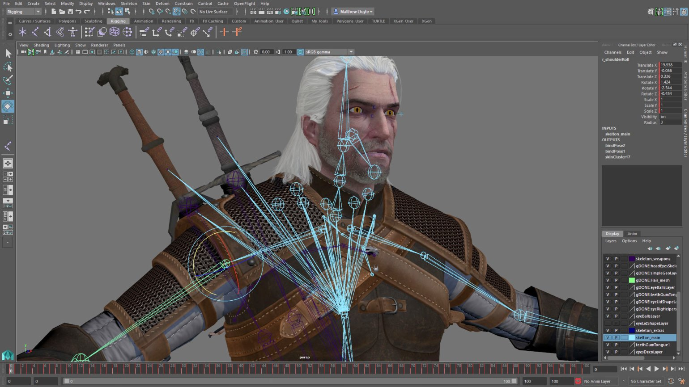
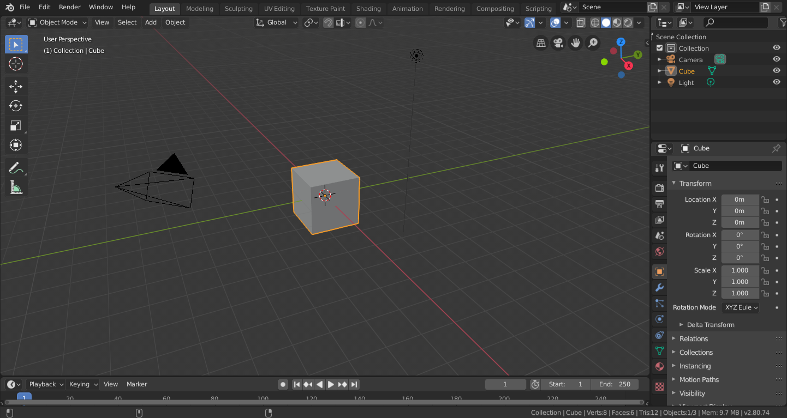
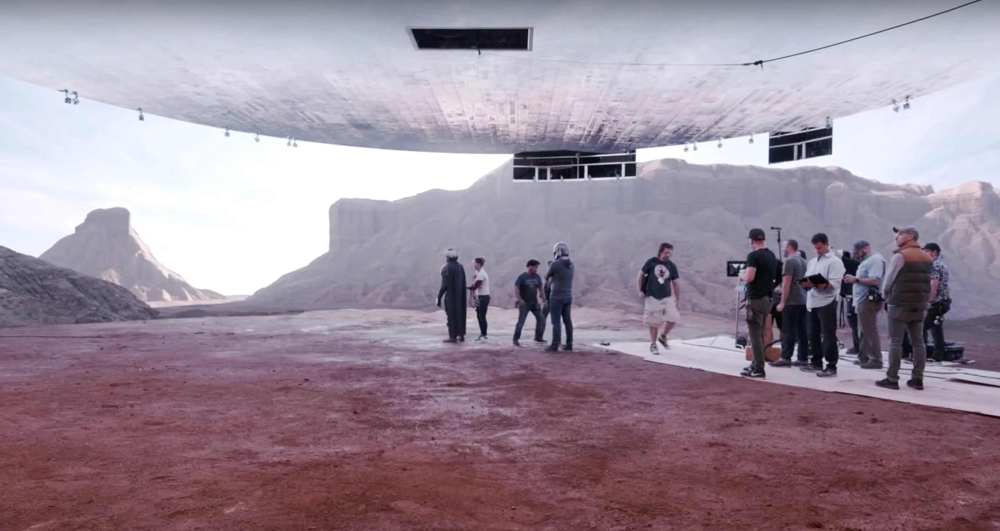
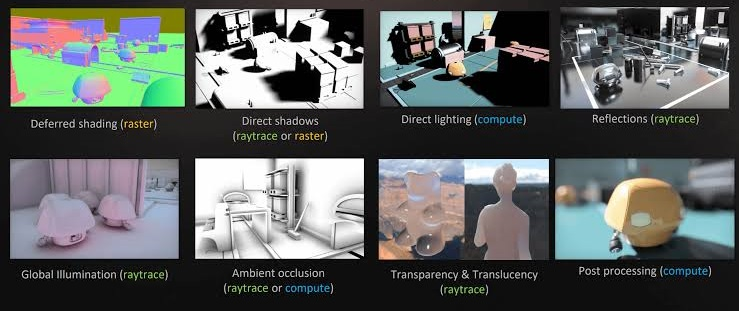

ИУ3-32М Дуданов Ю.В.

Переход от аналоговой обработке к цифровой
Популярное ПО для монтажа и обработки изображений
Наиболее используемые технологии и приемы в кинематографии
От идеи до кадра
киноплёнка, механический монтаж, оптические спецэффекты.
цифровой монтаж, первые технологии CGI, сканирование киноплёнки.
цифровая съёмка, нелинейный монтаж, 3D-анимация, компьютерные визуальные эффекты и рендеринг в реальном времени.
Объединение видеоматериалов, обрезка, переходы
Изменение цветовой гаммы, устранение шумов
Объединение съемки с компьютерной графикой
Создание анимированных персонажей, объектов, фильмов
Построение и рендеринг сцен
Создание виртуальных декораций, интерактивных сцен и визуальных эффектов в реальном времени.





Совмещение виртуального пространства, компьютерных эффектов с реальной съемкой в реальном времени


| Формат | Сжатие | Качество | Основное применение |
|---|---|---|---|
| MP4 (H.264) | Высокое | Хорошее | Интернет, YouTube, распространение видео |
| MP4 (H.265/HEVC) | Очень высокое | Высокое | 4K/8K, HDR, потоковое видео |
| MOV (ProRes) | Низкое / умеренное | Очень высокое | Монтаж и постобработка кино |
| MXF (DNxHR) | Низкое / умеренное | Очень высокое | Профессиональный монтаж и телевидение |
| RAW | Минимальное или отсутствует | Максимальная гибкость обработки | Съёмка кино, цветокоррекция и VFX |
| AVI | Зависит от кодека | Зависит от кодека | Архивирование и обработка видео |
Программные средства создания и обработки видеоизображений играют важную роль в современном кинематографе и анимации. Развитие технологий рендеринга, виртуального производства и искусственного интеллекта расширяет творческие возможности и повышает эффективность кинопроизводства. При этом качество конечного результата зависит не только от технических возможностей программ, но и от профессионализма специалистов и их художественных решений.
Таким образом, современные программные средства являются неотъемлемой частью киноиндустрии, объединяя технологии и творчество для создания реалистичных, выразительных и визуально сложных произведений.